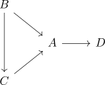
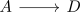
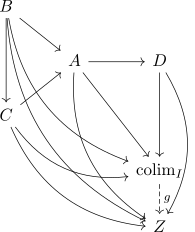
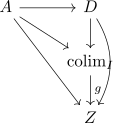
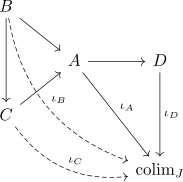
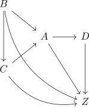
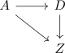
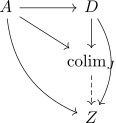
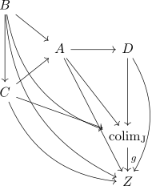

chopping theorem for colimits
Proposition
Let $\mathcal{C}$ be a category, $I: \mathcal{I} \rightarrow \mathcal{C}$ be a diagram and $A \in \mathcal{J}$. Suppose $J: \mathcal{J} \rightarrow \mathcal{C}$ is the full subdiagram containing $A$ and precisely all objects $D$ without a morphism
Suppose furthermore that the subdiagram preserves connected components, i.e. two different connected compontents in $\mathcal{J}$ get sent to two different connected components in $\mathcal{I}$ Assume furthermore that for any chopped $D$ all morphisms $D \rightarrow A$ commute in the diagram $I$
TFAE:
- there exists a colimit $\mathrm{colim_{I}}$
- there exists a colimit $\mathrm{colim_J}$
- there exist $\mathrm{colim_I}, \mathrm{colim_J}$ and there exists a unique isomorphism $\mathrm{colim_I} \cong \mathrm{colim_J}$
Proof
Sloppy notation, as $I(A) = A$
Let

be a (slightly bigger than usual) snapshot of a cone.
We will chop of and get

as snapshot.
1) $\implies$ 2)
object
We show that if $\mathrm{colim_{I}}$ exists, then $\mathrm{colim_J} \cong \mathrm{colim_I}$ by satisfying the universal property (cf. universal property unique up to unique isomorphism)
Consider $\mathrm{colim}_I$ together with the morphisms $\iota$ given by $\mathrm{colim}_I$ as colimit over $I$
morphism
Suppose there exists an Object $Z$ and morphisms
making the diagram commute Then there exist unique morphism $B \rightarrow Z, C \rightarrow Z$, namely the composition, making following diagram commute
By universal property, there exists a unique morphism $g: \mathrm{colim}_I \rightarrow Z$ such that

commutes
commutes
Hence especially

commutes
uniqueness
Suppose there exists a morphism $f: \mathrm{colim}_I \rightarrow Z$ making the diagram commute. Then we can extend the diagram by defining $B \rightarrow \mathrm{colim}_I$ as factorization through $A$ and $B \rightarrow Z$ analogously as factorization through $A$.
Then
commutes and by universal property of $\mathrm{colim}_I$, we conclude that
2) $\implies$ 3)
object
We show that if $\mathrm{colim_{J}}$ exists, then $\mathrm{colim_I} \cong \mathrm{colim_J}$ by satisfying the universal property.
Consider $\mathrm{colim}_J$ together with the morphisms $\iota$ given by $\mathrm{colim}_J$ as colimit over $I$,

Here $\iota_B, \iota_C$ are defined as factorization through $A$ with $\iota_A$. Note that this defines $\iota_B, \iota_C$ uniquely: By commutativity there exists a designated morphism $B \rightarrow A$ and a unique coprojection $A \rightarrow \mathrm{colim}_J$ for each object $B$
morphism
Suppose there exists an object $Z$ and morphisms

making the diagram commute.
Then we especially have a commuting diagram

and thus a unique morphism
making

commute
commutes
Hence by construction also

commutes, as the morphism $B \rightarrow \mathrm{colim}_J$ are defined as factorization through $A$
uniqueness
Suppose there exists a morphism $f: \mathrm{colim}_J \rightarrow Z$, making
commute
Then $f$ also makes
commute.
Hence by universal property of $g$, we conclude that
3) $\implies$ 1)
special case